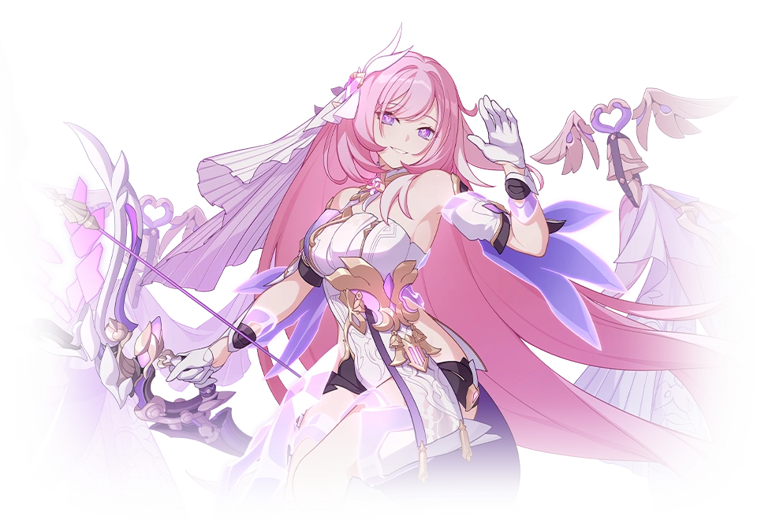
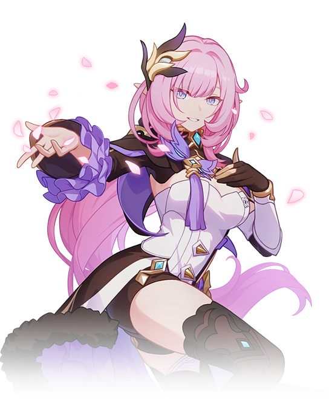

"สวัสดีจ้า~ ในที่สุดเราก็ได้พบกันสักทีนะ! ฉันคือ Elysia สาวน้อยผู้งดงามราวกับดอกไม้ที่ผลิบาน~ ♪"

Elysia คือรองหัวหน้าของเหล่า 13 วีรชนผู้ไล่ตามเพลิง (Thirteen Flame-Chasers) แห่งยุคสมัยก่อน และเป็น Herrscher of Origin (Herrscher of Human: Ego) ผู้เลือกที่จะรักและเชื่อมั่นในมนุษยชาติอย่างไม่มีเงื่อนไข
ด้วยบุคลิกที่ร่าเริง สดใส ขี้เล่น และเต็มไปด้วยความอบอุ่น เธอได้มอบ "มนุษยธรรม" ให้แก่เหล่า Herrscher ในยุคถัดไป เพื่อเปิดเส้นทางสู่อนาคตที่มนุษย์สามารถเอาชนะชะตากรรมได้ด้วยตนเอง
ผู้ถือกำเนิดจากคริสตัลบริสุทธิ์ และบทเพลงสรรเสริญแห่งมนุษย์
ร่างที่แท้จริงในฐานะ Herrscher of Origin มาพร้อมสองรูปแบบการต่อสู้ ทั้งร่างมนุษย์ที่ใช้ธนูคริสตัลยิงศรเวทมนตร์ และร่าง Herrscher ที่เนรมิตอาณาเขตแห่งดวงดาว (Stars of the Past) สร้างความเสียหายน้ำแข็งอย่างรุนแรง

สาวน้อยเอลฟ์สีชมพูผู้เปี่ยมด้วยเสน่ห์และรอยยิ้มอันสดใส
ชุดสูทแรกเริ่มของ Elysia ในฐานะรองหัวหน้า Flame-Chasers เน้นการยิงธนูความเร็วสูงและการสร้างโดมคริสตัล ที่ทำให้ลูกศรสะท้อนโจมตีศัตรูได้อย่างต่อเนื่องและงดงาม
กดปุ่มด้านล่างเพื่อส่งกำลังใจและความรักให้สาวน้อยเอลฟ์สีชมพู!